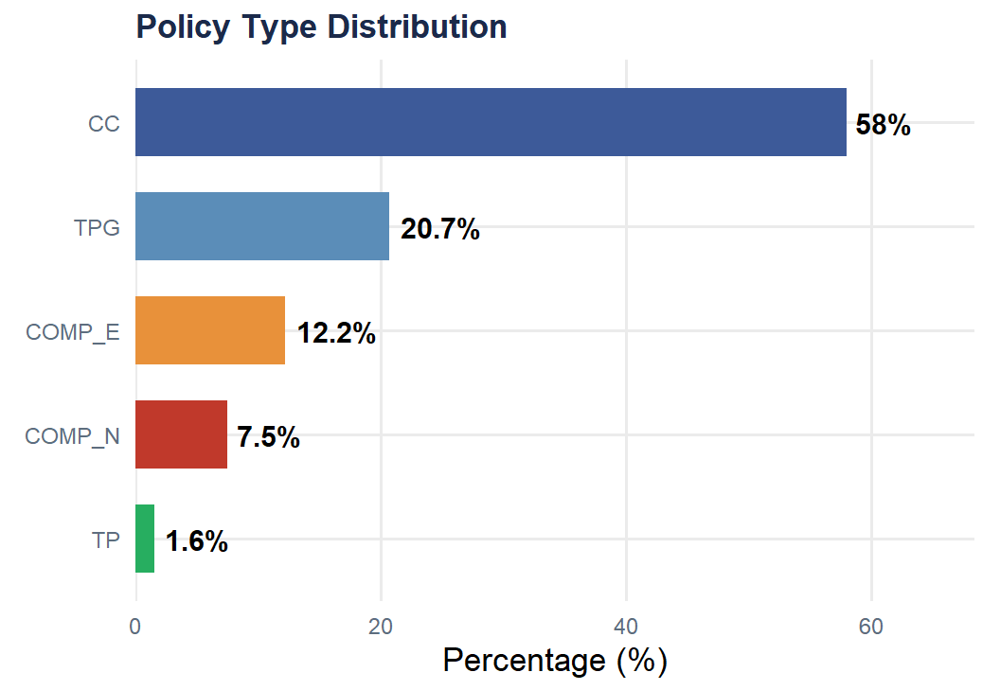
Unmasking Motor Insurance Risk Drivers
Executive Summary
Contents
Portfolio Profile
- Dataset and Portfolio Overview
- Categorical Variable Distributions
- Numerical Variable Distributions
Risk and Profitability
- Temporal Performance Trend
- Loss Ratio by Policy Type
- Loss Ratio by Bonus Score
Deep Dive Analysis
- Optional Coverage Pricing Mismatch
- Vehicle Brand Risk Analysis
- Driver Age and Bonus Score Patterns
- Correlation Structure
Conclusion
- Key Findings and Recommendations
This presentation summarises the visual analytics investigation of a Spanish motor vehicle insurance portfolio. The dataset covers 354,140 policy records with 47 variables spanning January 2022 to December 2024. We applied univariate, bivariate, and multivariate techniques to uncover patterns in profitability and volatility. The analysis follows a structured flow: first understanding the data composition, then examining risk drivers, and finally synthesising actionable findings for underwriting strategy.
Insight 1: Dataset and Portfolio Overview
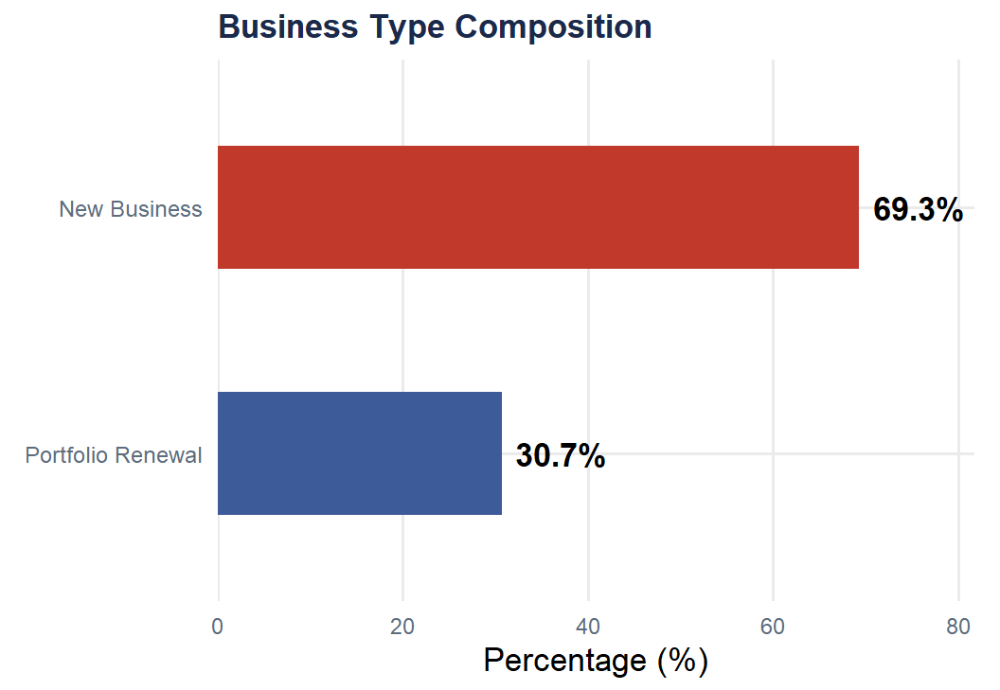
The portfolio contains 354,140 records across 47 variables (11 categorical, 35 numerical) from Jan 2022 to Dec 2024. Combined Coverage (CC) dominates at 58% of all policies, while pure Third Party (TP) is rare at 1.6%. The business mix is heavily skewed toward new business at 69.3%, which is a risk signal since new customers lack claims history.
The dataset contains 354,140 anonymised policy records from a Spanish non life insurer. After data wrangling we have 1 identifier, 11 categorical, and 35 numerical variables. CC dominates at 58% of policies, indicating customers prefer combined coverage. The business mix reveals a critical insight: 69.3% new business versus only 30.7% renewals. This heavy acquisition focus means the insurer is continuously adding customers without established claims history, creating unknown risk exposure. Missing values were minimal, under 1%, handled through row removal or zero imputation depending on insurance context.
Insight 2: Categorical Variable Distributions
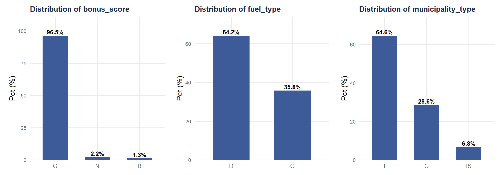
Bonus score: 96.5% have G (good claims history), meaning the portfolio appears low risk on the surface. Fuel type: 64.2% diesel vs 35.8% gasoline, reflecting Spain’s diesel preference. Municipality type: 64.6% inland (type I), which typically carries higher accident and theft risk than coastal and island areas.
The categorical distributions reveal important portfolio characteristics. Bonus score is heavily skewed with 96.5% rated G, suggesting most policyholders have clean records. However, this masks the new business risk since 69.3% of policies are new customers who default to the G category. Fuel type splits 64.2% diesel versus 35.8% gasoline, consistent with Spain’s historical diesel preference. Municipality type shows 64.6% inland locations where accident and theft risk tends to be higher. Circulation area is nearly balanced at 53.8% urban versus 46.2% rural, suggesting national coverage across the portfolio.
Insight 3: Numerical Variable Distributions
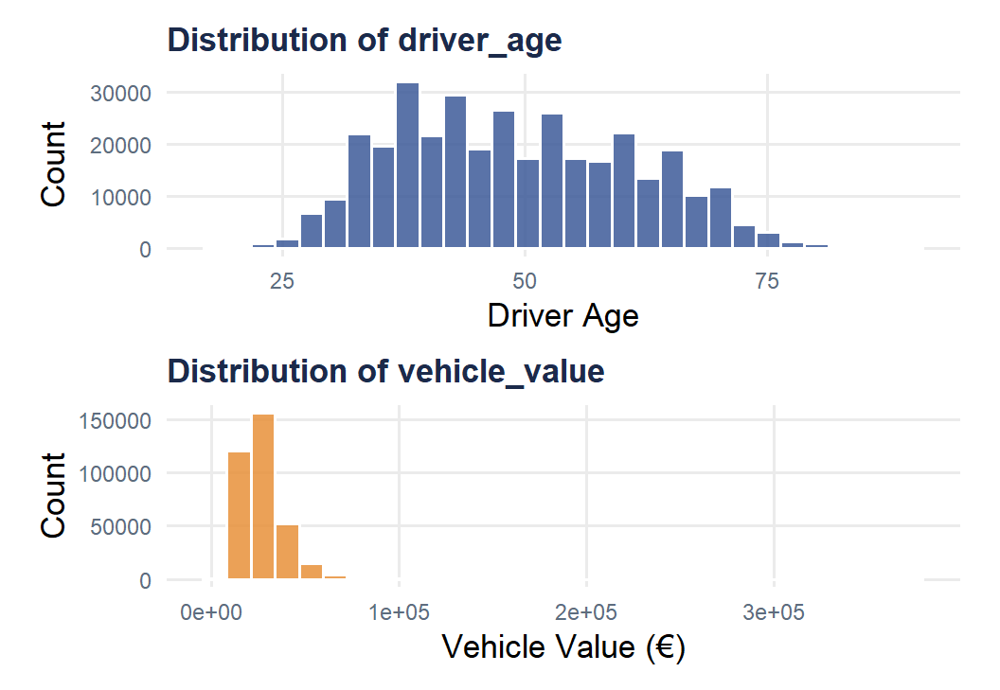
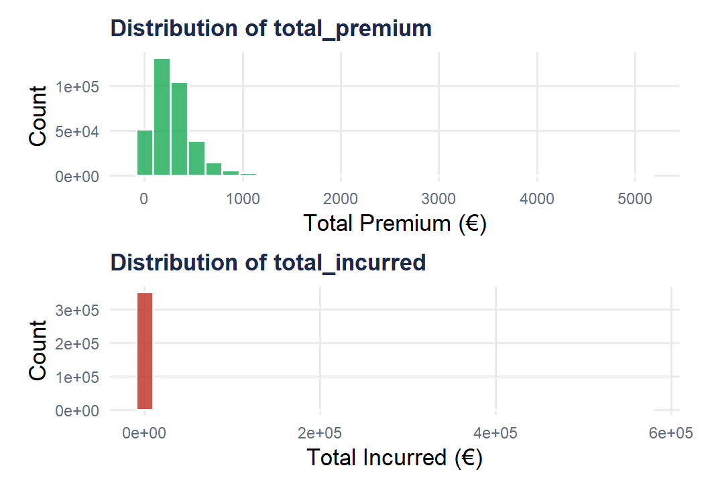
driver_age is bell shaped, peaking at 35 to 50; young (<25) and elderly (>70) are rare. vehicle_value is heavily right skewed, most under €50,000 with a long tail to €300,000+. total_premium is right skewed with most policies at low to mid range. total_incurred is overwhelmingly zero with a long right tail to €600,000, the classic low frequency, high severity insurance pattern.
The numerical distributions reveal a portfolio dominated by middle aged drivers with standard vehicles. Driver age peaks between 35 and 50 years with very few young or elderly policyholders. Vehicle value is heavily right skewed, typical of insurance portfolios where most policies cover affordable cars but a long tail of luxury vehicles exists. Total premium shows right skew with most policies at low to mid premiums. Total incurred is dominated by zeros since most policies have no claims, but when claims occur they can reach extreme values up to 600,000 euros. This classic insurance pattern of low frequency high severity events makes the portfolio vulnerable to individual catastrophic claims.
Insight 4: Temporal Performance Trend (2022 to 2024)
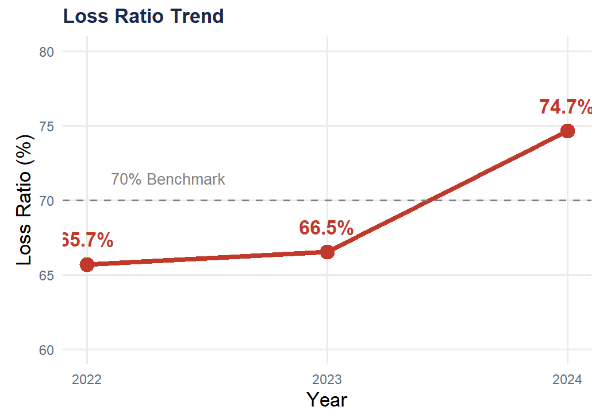
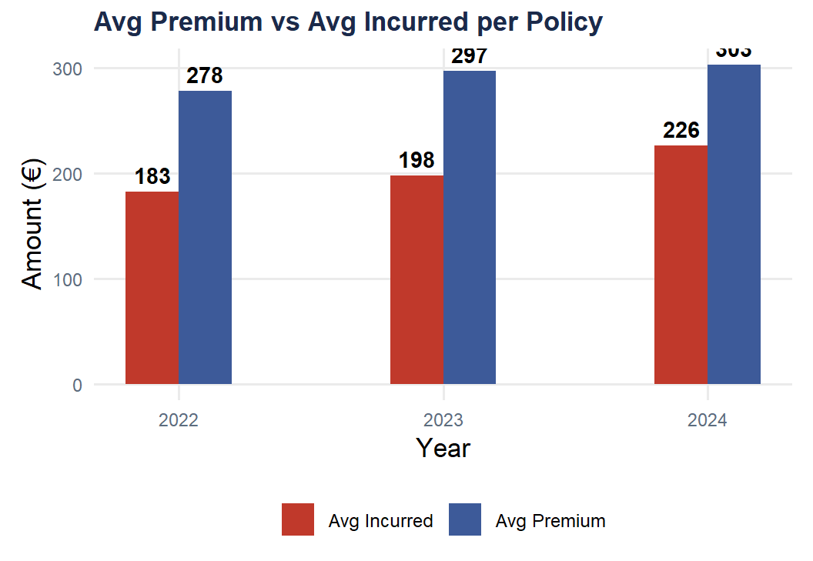
Loss ratio increased from ~66.5% (2022) to ~67% (2023), then spiked sharply to ~75% in 2024, an ~8 percentage point jump that crossed the 70% benchmark. Avg incurred rose consistently from 187 to 224 euros while avg premium peaked in 2023 then declined. The insurer appears to have reduced premiums to attract new business while claims costs continued rising.
The temporal analysis reveals alarming profitability deterioration. Loss ratio jumped approximately 8 percentage points from 2023 to 2024, crossing the 70% healthy benchmark. The bar chart shows the mechanism: average incurred losses rose consistently while average premiums peaked in 2023 then declined in 2024. This suggests the insurer reduced premiums to attract new business while claims costs continued rising. The combination of declining premiums, increasing severity, and heavy reliance on new business acquisition at 69.3% without sufficient premium adjustment is the most critical finding. The portfolio is under accelerating financial stress requiring urgent pricing intervention.
Insight 5: Loss Ratio by Policy Type
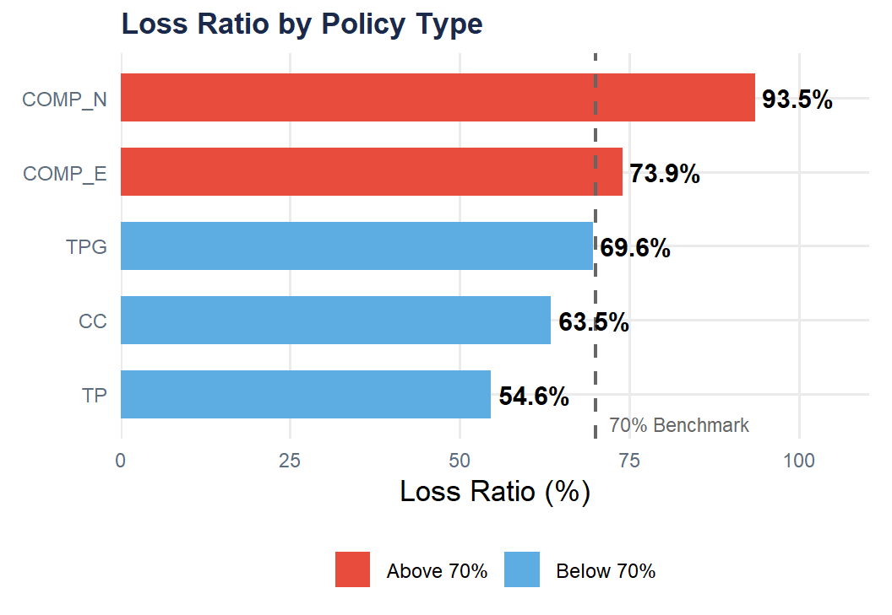
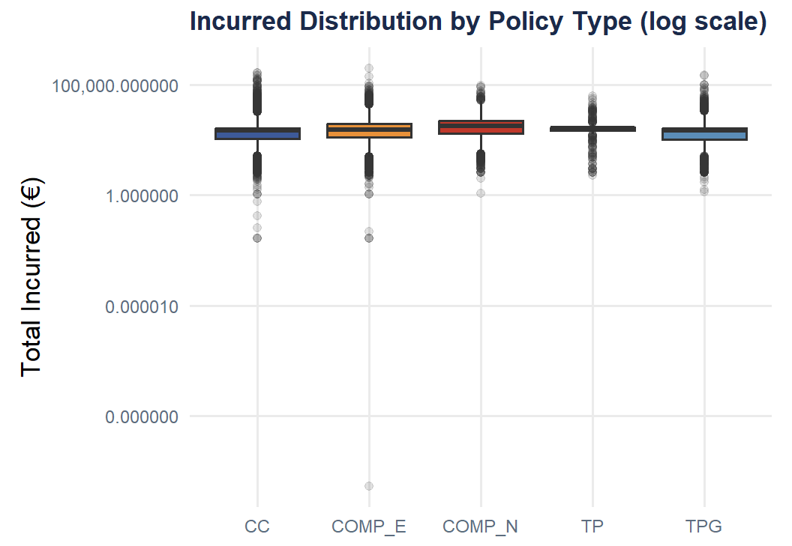
COMP_N is the most unprofitable at 93.5%, far exceeding the 70% benchmark. The 19 point gap between COMP_N (93.5%) and COMP_E (73.9%) demonstrates that the deductible is highly effective at reducing claims cost. The boxplot confirms COMP_N also has the widest spread in incurred amounts, generating both the most frequent and most variable claims. TP is the most profitable at 54.6%.
COMP_N stands out as the most unprofitable product at 93.5% loss ratio, exceeding the 70% benchmark by 23.5 percentage points. The 19 point gap with COMP_E demonstrates that the deductible is highly effective at reducing claims cost. The boxplot confirms COMP_N has the widest interquartile range in incurred amounts, meaning it generates both the most frequent and most variable claims. TP is most profitable at 54.6% due to limited coverage scope. TPG sits just below the benchmark at 69.6% but is surprisingly less profitable than CC at 63.5%, suggesting glass replacement costs may be underpriced relative to their frequency.
Insight 6: Loss Ratio by Bonus Score
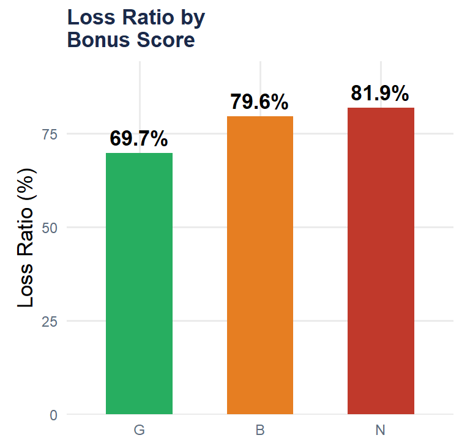
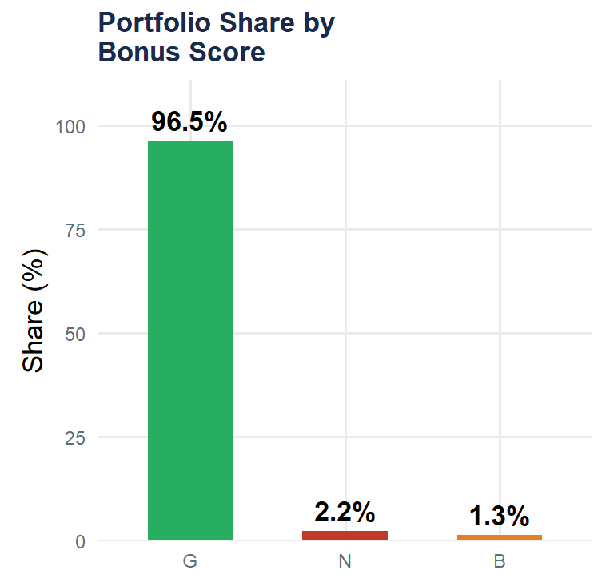
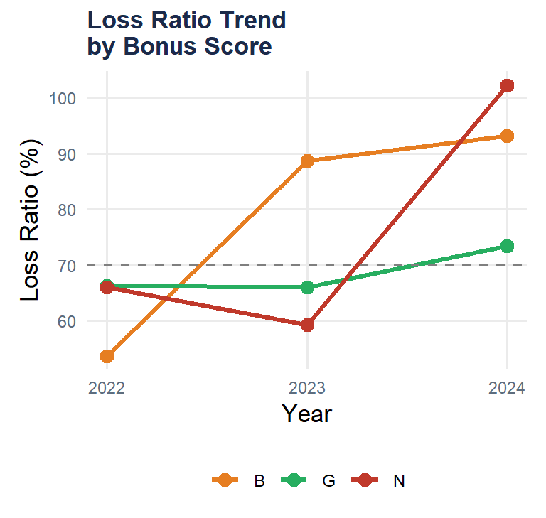
G (Good) achieves the best loss ratio at 69.7%, while N (New) performs worst at 81.9%, with B (Bad) in between at 79.6%. The 12 point gap confirms claims history is a strong risk predictor. Although G dominates the portfolio at 96.5%, the 69.3% new business inflow means the insurer continuously adds its most unprofitable segment. The trend chart shows N consistently worsening across all three years.
The bonus score analysis reveals a clear risk gradient. G rated policyholders achieve the best loss ratio at 69.7%, while N rated new customers perform worst at 81.9%. The 12 percentage point gap confirms claims history strongly predicts future loss. The middle chart shows G dominates at 96.5% of the portfolio, but combined with 69.3% new business ratio, there is a large inflow of unknown risk. The right panel shows the temporal trend: N consistently worsens year over year while G remains relatively stable. This structural vulnerability means acquisition focused growth directly worsens portfolio profitability.
Insight 7: Optional Coverage Pricing Mismatch
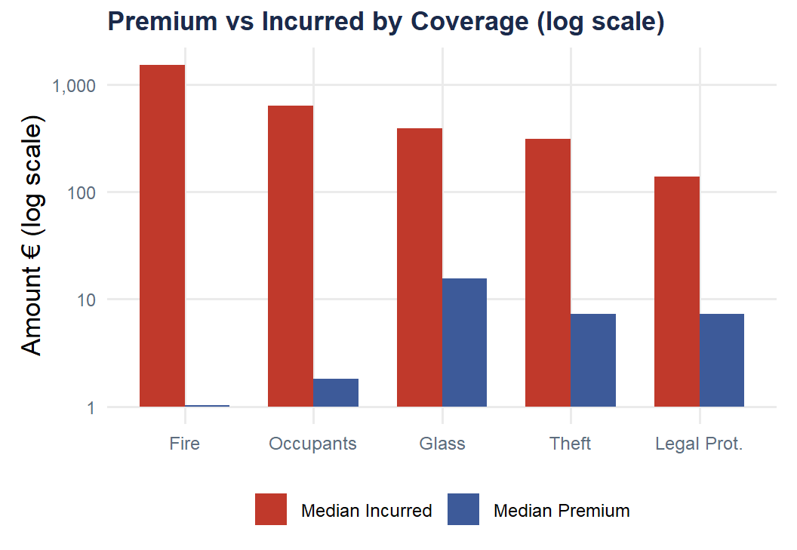
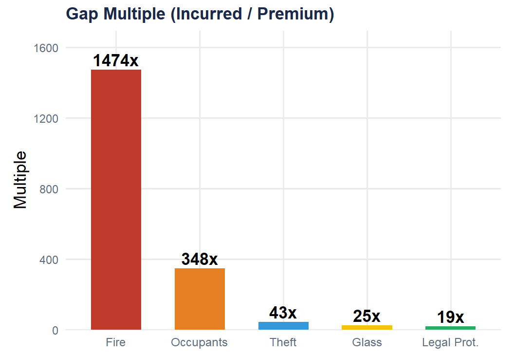
Fire coverage has the most extreme mismatch: median premium of €1 against median incurred of ~€1,523, a 1,500x gap. Occupants follows at 350x. Glass and Theft show moderate mismatches at 25x and 43x. Only Legal Protection appears adequately priced. Mandatory coverages (liability, property damage) show mature pricing, while optional coverages are systematically underpriced.
The analysis reveals extreme pricing mismatches in optional coverages. Fire coverage shows the most critical gap with a median premium of just 1 euro against median incurred losses of approximately 1,523 euros, a staggering 1,500 times mismatch. Occupants follows at 350 times. Glass and theft show moderate gaps. Only legal protection appears adequately priced with roughly proportional distributions. The log scale comparison is necessary because differences span several orders of magnitude. This systematic underpricing of optional add on products directly erodes portfolio profitability and confirms that mandatory coverages have mature risk based pricing while optional products remain significantly underpriced.
Insight 8: Vehicle Brand Risk Analysis
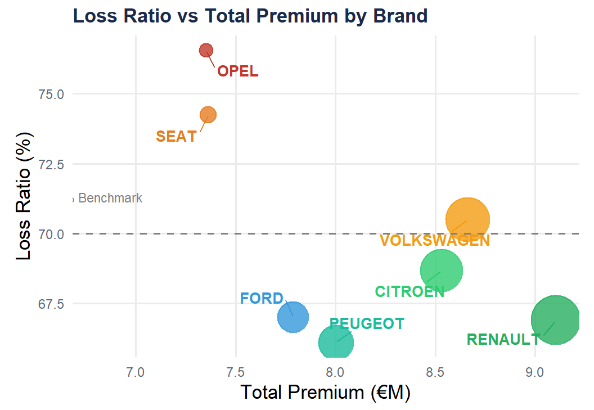
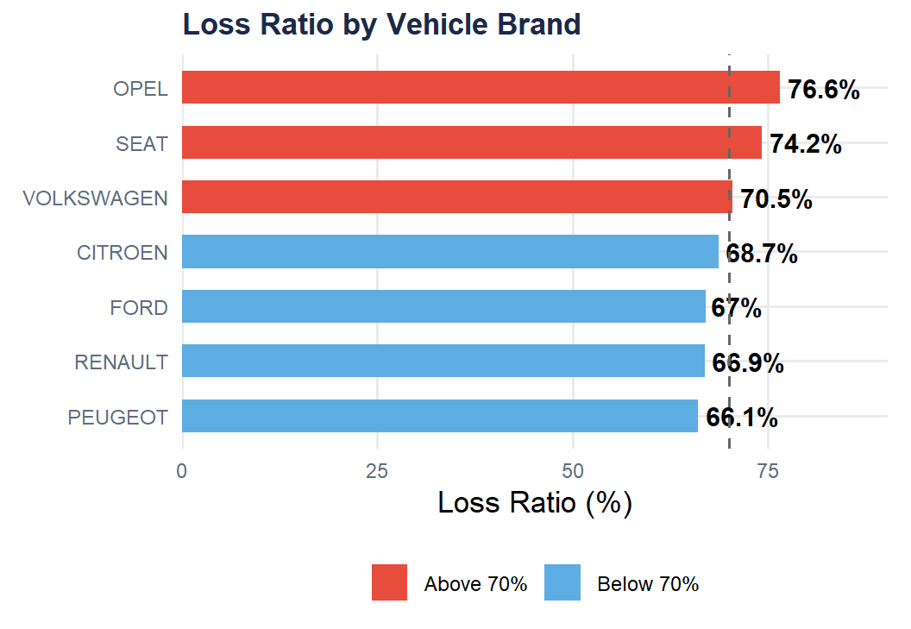
RENAULT (67%) and PEUGEOT (66%) are the most valuable brands: highest premium volume with the lowest and most stable loss ratios. OPEL (77%) is most concerning with extreme volatility and smallest revenue. SEAT (74%) is consistently above benchmark across all years, confirming structural underpricing. French brands collectively represent ~27% of the portfolio, reflecting Spain’s preference.
The bubble chart reveals distinct risk and revenue clusters. RENAULT and PEUGEOT combine high premium volumes with low loss ratios around 66 to 67%, making them the most valuable brands. VOLKSWAGEN has the largest premium volume among named brands but sits at moderate 71% requiring monitoring. OPEL is most concerning at 77% loss ratio with extreme year to year volatility and smallest revenue. SEAT consistently hovers above benchmark, confirming structural underpricing. French brands collectively represent approximately 27% of the portfolio. The temporal trend shows RENAULT and PEUGEOT remaining stable across all years, making them the safest brands for retention.
Insight 9: Driver Age and Bonus Score Patterns
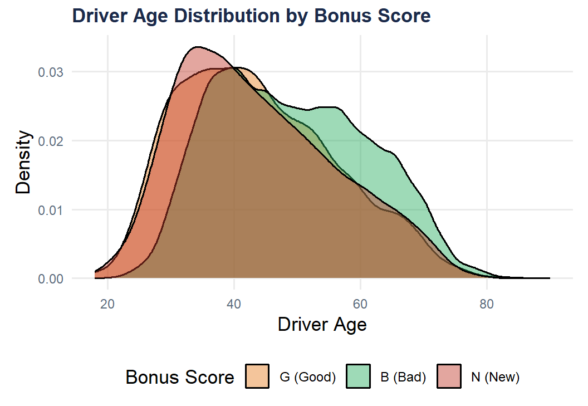
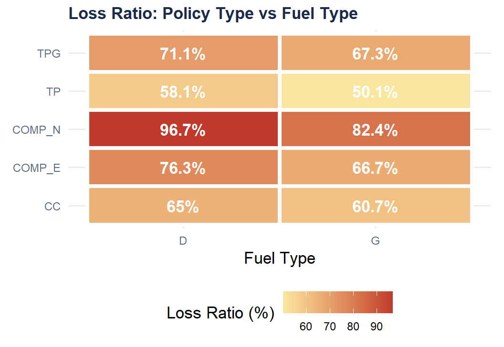
N (New) drivers peak sharply around age 33 to 35 as first time buyers. B (Bad) mirrors N almost exactly, suggesting they are the same young cohort who quickly accumulated claims. G (Good) spreads wider with bimodal peaks at ~40 and 55 to 65, reflecting decades of clean driving. The heatmap shows fuel type has minimal impact across most policy types; COMP_N remains the worst regardless of fuel, confirming driver profile matters more than vehicle fuel type.
The density plot reveals a strong link between driver age and bonus score. New customers cluster sharply around age 33 to 35 as first time insurance buyers. Bad history customers show a nearly identical distribution, suggesting they are the same young cohort who quickly accumulated claims. Good history customers spread much wider with bimodal peaks around 40 and 55 to 65, reflecting experienced drivers with decades of clean records. The heatmap shows fuel type has minimal impact on loss ratios across most policy types, except COMP_N where diesel shows even higher losses. This confirms fuel type should not be a primary rating factor while driver age and claims history remain stronger risk predictors.
Insight 10: Correlation Structure
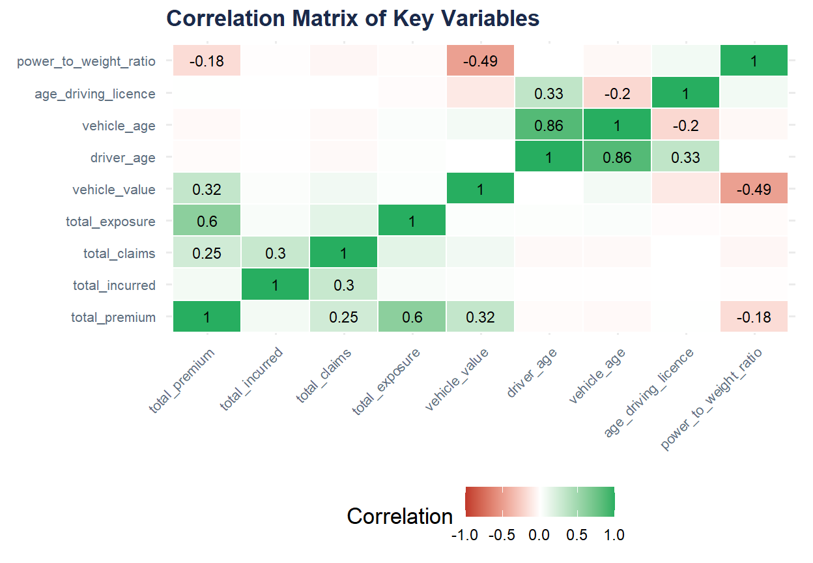
Strong pairs:
- vehicle_age & age_driving_licence (0.86): nearly redundant variables
- total_exposure & total_premium (0.6): longer policies generate higher premiums
Weak but notable:
- vehicle_value & total_premium (0.32): pricing is not strongly value driven
- power_to_weight_ratio & vehicle_value (−0.49): high performance vehicles tend to be undervalued
Critical finding:
- total_incurred shows near zero correlation with almost all variables individually, meaning claims severity is driven by variable interactions rather than single factors
The correlation matrix reveals important structural relationships. Vehicle age and age of driving licence correlate at 0.86, indicating near redundancy. Total exposure and total premium correlate at 0.6, expected since longer policies generate higher premiums. Vehicle value and total premium show surprisingly weak correlation at 0.32, suggesting pricing is not strongly value driven. Power to weight ratio has a negative correlation of minus 0.49 with vehicle value, meaning high performance vehicles tend to be undervalued. Most critically, total incurred shows near zero correlation with almost all individual variables. This means claims severity is driven by interactions among multiple variables rather than any single factor, underscoring the need for multivariate modeling.
Key Findings and Recommendations
Key Findings
🔴 Portfolio profitability is deteriorating with loss ratio spiking from 66.5% (2022) to 75% (2024), crossing the 70% benchmark.
🔴 COMP_N is the most dangerous product at 93.5% loss ratio. The absence of a deductible encourages excessive claiming.
🔴 Optional coverages are systematically underpriced, with fire showing a 1,500x gap between premium charged and claims paid.
🟡 New business (69.3%) carries the worst loss ratios at 81.9%, directly worsening portfolio performance.
🟢 RENAULT and PEUGEOT are the most valuable brands, combining high revenue with stable, low loss ratios across all years.
Recommendations for Future Research
📊 Confirmatory statistical analysis: Hypothesis testing and regression modeling to validate exploratory findings and establish causal relationships.
📅 Temporal granularity: Monthly or quarterly analysis to reveal seasonal patterns in claims frequency and severity.
👥 Customer retention analysis: Investigate the relationship between cancellation behavior, policy tenure, and profitability.
🌐 External data enrichment: Incorporate inflation rates, repair cost indices, and regional accident statistics to improve understanding of rising claims severity.
This study applied systematic visual analytics to uncover critical risk drivers in the Spanish motor insurance portfolio. The most urgent finding is the accelerating profitability deterioration driven by rising claims severity, declining premiums, and heavy reliance on new business with unknown risk profiles. COMP_N requires immediate repricing given its 93.5% loss ratio. The systematic underpricing of optional coverages, particularly fire at 1,500 times gap, represents a structural weakness. Vehicle brand analysis identified clear winners and losers for targeted underwriting strategy. These exploratory findings should be validated through formal statistical modeling and enriched with external data sources.